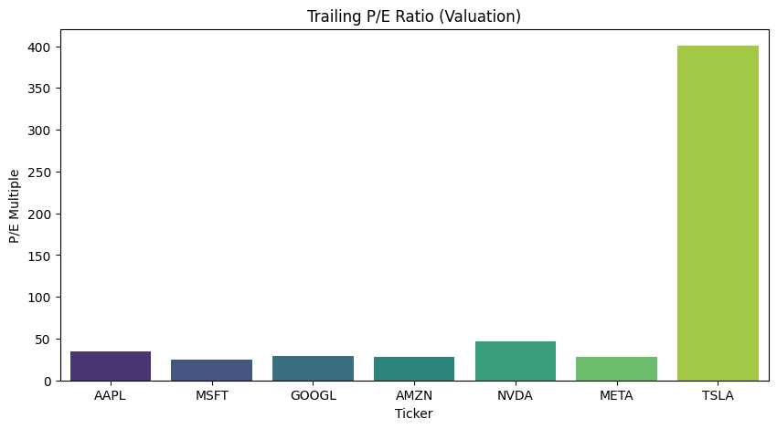
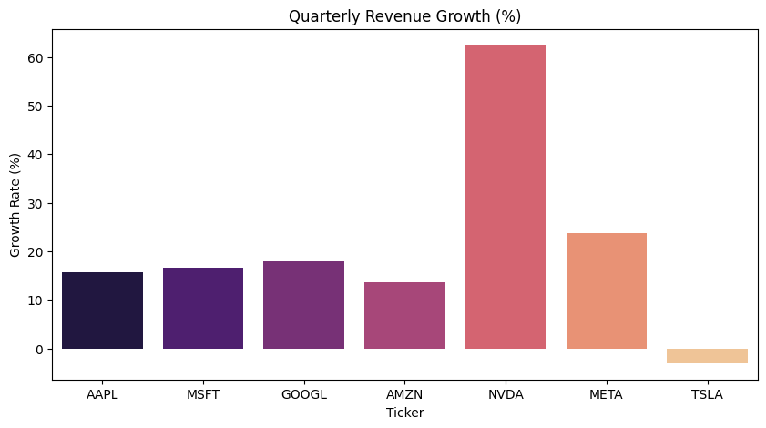

1. Motivation and Purpose
Target Audience:
Our target audience is individual investors who manage their own stock portfolios and want a better way to track how their investments are doing. We are building this dashboard as a helpful financial tool that makes stock information easier to understand and keep track of in one place.
Problem:
Many investors are busy and do not have time to check their accounts every day. They also do not want to go through each stock one by one to see how it is performing. Financial information is often spread across different websites, which makes it harder to get a clear picture of their portfolio.
It can be confusing and time-consuming to track both daily price changes and long-term performance since the day they bought the stock. Because of this, investors may find it difficult to make quick and confident decisions.
Solution:
Our dashboard is designed to be a one-stop place where investors can see everything clearly. It includes summary tables and interactive charts so users can easily view both short-term and long-term performance.
Users can see daily price changes, total performance since purchase, current market value, and basic risk information. We also include a watchlist section so they can follow stocks they are interested in.
By putting all this information together in a simple and visual way, the dashboard helps investors understand their portfolio faster and make better decisions with less effort.
2. Description of the Data
rubric={reasoning:8}
Describe the dataset you finalized in Step 1.
- Stats: Number of rows/columns.
- Relevance: How variables potentially link to the problem.
3. Research Questions & Usage Scenarios
rubric={reasoning:10}
Detail how the audience will interact with the app.
Persona: Brief description of a user.
Usage Scenario create a narrative describing user needs and context.
User Stories / JTBD: Provide at least 3 User Stories or Job Stories that outline specific tasks the user needs to perform.
Persona - Daniel Chen Daniel is a data-driven retail investor working as tech professional, specifically as a data science instructor for MDS, he is an intermediate retail trader with goals of comparing top tech stocks efficiently and making informed long-term investment decisions. He struggles to consolidate information as financial data is scattered across multiple websites and hes overwhelmed by raw financial statements. He has been losing consistently and wants to trace where he went wrong.
Usage scenario
Daniel is reviewing his investment portfolio after noticing that most of his holdings are concentrated in large-cap tech stocks. He wants to better understand how the Magnificent 7 stocks compare across valuation, profitability, and performance metrics. Instead of checking multiple financial websites, Daniel opens the dashboard. He filters the time range to the past 3 years and examines price performance trends, P/E ratios and revenue growth, market cap comparison, and volatility metrics. The dashboard enables him to make a data-backed decision in minutes instead of hours.
- User Stories / Jobs To Be Done (JTBD) User story 1 – Performance Comparison: As an investor and I want to compare historical stock performance across the Magnificent 7, so that I can identify which companies are leading or lagging over a selected time period, and also compare these stocks to the S&P 500 so I can understand how top tech stocks compare.
User Story 2 – Valuation Analysis: As a valuation-focused trader, I want to compare key metrics of booming tech stocks, specfically metrics such as P/E ratio, earnings growth, and revenue growth side-by-side, so that I can assess whether a stock appears overvalued or undervalued relative to the market and to other similar tech stocks.
User story 3 - Reporting: As a banker, I want to display charts and graphs to the bank customers looking for investing help. These visuals should be able to display numerical information and be interpretable by the layman. I want to show them how the magnificent 7’s ROI and risk compare to my bank’s ETFs and other securities.
4. Exploratory Data Analysis
rubric={reasoning:10}
Demonstrate that your data can actually support your user stories.
- Select one of your User Stories/JTBD from Section 3.
- Create a Jupyter notebook in the
notebooks/folder (e.g.,notebooks/eda_analysis.ipynb).- Create 1-2 static visualizations or summary tables that directly address the user’s task.
- In your proposal document (this section), briefly explain what the visualization shows and how comparing these values specifically supports the user’s decision-making.
- (Include the relevant plots or a link to the notebook in this section).
User Story 2 – Valuation Analysis.  
5. App Sketch & Description

The sketch above shows the overall layout of our dashboard.
Portfolio Holdings (Top Left)
Displays summary cards for each stock, including ticker, latest price, and daily return. Users can click a card to update the stock price chart.
Stock Price Chart (Top Center)
Shows the selected stock’s price trend over a selected time period. This allows users to quickly analyze short-term and long-term movements.
Risk vs Return (Top Right)
A scatter plot comparing annual return (y-axis) and volatility (x-axis) across the selected stocks. This helps users evaluate performance relative to risk.
Performance Comparison (Middle Left)
A multi-line chart comparing price trends of the Magnificent 7 stocks over a selected time period.
Portfolio vs S&P 500 (Middle Center)
A line chart comparing overall portfolio performance against a benchmark (S&P 500).
Returns Heatmap (Middle Right)
A treemap visualization showing daily returns of the Magnificent 7 stocks. Each rectangle represents a stock, where the size of the box reflects its portfolio weight (or market value), and the color indicates its daily return (green for gains, red for losses).
Risk & Valuation Metrics (Bottom Left)
A summary table displaying key financial metrics such as P/E ratio, revenue growth, annual return, and volatility for side-by-side comparison.
Watchlist (Bottom Right)
A simple list of additional stocks the user is monitoring, showing latest prices and basic indicators.